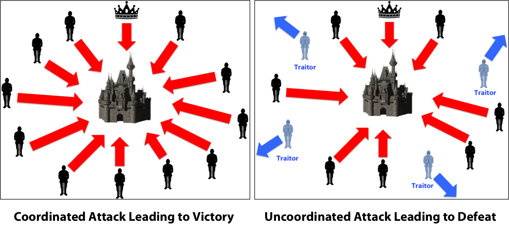

Origin
It’s derived from the problem of Byzantine Generals in Computer Science and handling a reliable transmission in a hierarchy. The problem is: An army occupies a city and generals are in many different positions. Among them, there’re N faithful generals who want to occupy the city and M betrayal generals who want to withdraw, a betrayal general informs a group of attacking and the other group of withdrawing. So, how can the generals be consistent with the same information and occupy the city together? If there’s one mistake in the transmission, the whole army will be destroyed. This problem of Byzantine Generals hasn’t been solved yet. Therefore, we need to have a third party to build trust. For example, we need a third party stand out as an agreement for the generals to sign, if any general does not agree with the agreement, he will be punished. A third party guarantees that the occupation is uniform, because the generals may not believe each other but they must absolutely believe this third party. After the financial crisis in 2008, the collapse of the US financial system completely made people lose faith in currency of a trusted third party. The idea of Bitcoin, a peer-to-peer decentralized computer network currency, first introduced by Satoshi Nakamoto, it’s also the first application of Blockchain.
Development History

In 1982, David Chaum wrote a paper titled Blind Signatures for Untraceable Payments, David Chaum was known as a virtual money inventor and blind signature because of this article. Blind signature (hidden signature) hides the message content before being signed, digital signatures can be verified with the original signature, however, the content is still hidden. This is a primitive version of cryptographic signatures for virtual currencies.

In 1998, Nick Szabo proposed a decentralized virtual currency called Bit Gold. This currency incorporates the algorithm of Proof Of Process in the same computer network that accepts valid proof of process and integrates into the next time-labeled piece. However, Bit Gold never became a genuine currency and only existed in theory, though it was considered to provide favorable conditions for the development of Blockchain and Bitcoin technologies.
In 2008, Satoshi Nakamoto (often considered as the author’s pseudonym) posted an essay on the Internet with the title Bitcoin: A peer-to-peer Electronic Cash System. This article provides an overview of development of Bitcoin and a block of connection transactions in the series. The article does not directly use the term “Blockchain” when introduced to this method.
In 2009, Bitcoin went beyond the idea of an academic text when Satoshi Nakamoto set up Bitcoin network with the first Blockchain. The blockchain was first mentioned with the discrete “Blockchain” phrase in the original source code for Bitcoin. This first blockchain is a core feature of Bitcoin, preventing duplication of transaction status and working as a decentralized public ledger for all transactions on the Bitcoin network. Satoshi Nakamoto is known as the first person to exploit the first block on the Bitcoin network, also known as the “Primitive Block”.
In 2015, Ethereum Blockchain was born. This event brought the potential of Blockchain technology to new heights. The Ethereum network allows decentralized applications to run on a Blockchain along with a smart contract protocol. Smart contracts and decentralized applications are widely recognized as the future of Blockchain technology which is commonly known as Blockchain 2.0. Most of financial services companies and banks in the world have developed a Blockchain-based system to replace the existing networks or databases. Thanks to easy access and the ability to allow decentralized applications to coordinate with smart contracts, Blockchain technology has been used to almost every industry. Programmers were able to build software that works on Blockchain without creating their own Blockchain.
Application
Production

Typically, it’s impossible to create a fake, applying Blockchain’s indestructible characteristics to the manufacturing industry will help consumers retrieve the origin of the product being offered. For example: If a dairy manufacturing company applies Blockchain to product quality management, consumer managers can access very evident information.
For producers: They can reckon and store all of milk in the market to see if they have been consumed, how much they are consumed and how many boxes are still in use and how many boxes has expired.
For consumers: The company can check whether the milk cartons are genuine products in order to prevent all fake and counterfeit products on the market.
Walmart is one of the pioneering businesses using blockchain. Currently, this retail brand has used blockchain since 2016 to track pork sources imported from China to the US.
Healthcare

When patients are tested, all their results will be stored using blockchain technology to help patients keep all their information and testing indicators confidential safe. In case that the patient needs to transfer to another hospital anywhere in the world, they just need to retrieve their test results and index information on the blockchain, even though the two hospitals (the first and new hospital) don’t use the same language or different software.
This helps patients reduce the cost of re-testing when they visit new hospitals as well as helps new patients to access a history of illness, treatment regimens or side effects for previous type of drug component which they’ve used. That helps diagnosing and providing appropriate treatment course, it is highly effective for patients.
Education

Verifying degree and certification is the most complex problem ever for many countries around the world. When searching on google, we can easily know buying and selling fake certificates and degrees on many websites around the world.
The management of certificates, degrees of universities or vocational training institutions. If we apply Blockchain technology, it will contribute to transparency of student records as well as help employers more easily retrieve the origin of the training or the learning process of candidates from low to high.
In San Francisco, Holberton – a software engineering school has announced the project of managing students based on the blockchain platform in the new school year.
Finance

Many banks and other financial institutions have researched and applied Blockchain technology into their professional activities. Recently, three major Japanese banks including Mizuho Bank, Sumitomo Mitsui Banking and Bank of Tokyo-Mitsubishi UFJ announced applying blockchain technology in their operations. Before that, these banks are often complained by consumers because of high money transfer service fees. The peer-to-peer transfer project using blockchain technology is part of efforts to provide safe, high-security, low-cost financial services – an area in which large banks are being left behind by smaller opponents.
In Asia, OCBC Bank is the first bank in the world to use blockchain technology in domestic and international money transfer services, increasing efficiency, transparency, reducing costs and improving experience for customers.
Blockchain is seen as a way to cut off costs and time for interbank transactions as well as create safer systems. Currently, many financial institutions are fighting for forming new alliances to commercialize blockchain technology. Significantly, the R3 alliance of Australia’s three largest banks, including Westpac, Commonwealth, and NAB along with 40 banks and a number of other financial institutions around the world.
E-Commerce

The major challenges of e-commerce can be handled by smart contracts when applying blockchain technology. With blockchain technology, customers can be assured when signing smart contracts and putting payment solutions into the website. From here we can easily trade and cooperate with many domestic and foreign enterprises with many times quicklier and simpler procedures.
Development Potential

Firstly, there are difficulties when the blockchain research and development community in Vietnam is still scattered, personal and local. There is no place to guide, train and develop this technology in a popular and widespread way. This is a matter of concern for those who want to apply blockchain technology when they have no reliable place to share knowledge, skills and experience when implementing, applying blockchain.
The next obstacle can completely be used for illegal purposes. These are anonymous transactions, creating an environment and opportunity for improper transactions. That are contrary to the regulations and cause losses and negatively affect the nation’s economy.